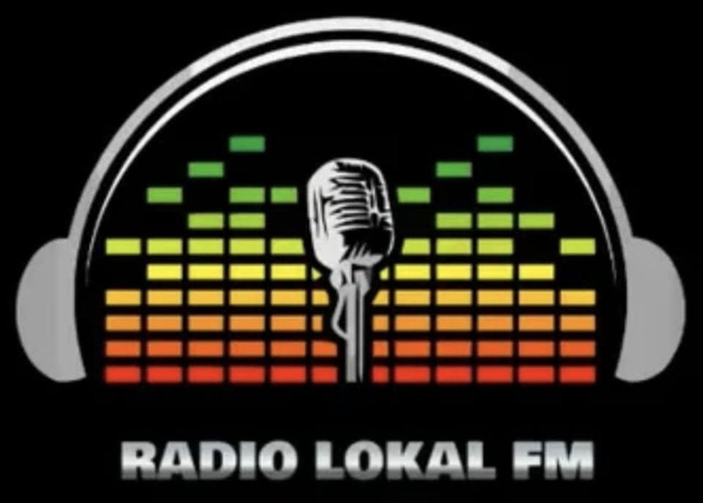

LA RADIO QUI VIBRE À LA RÉUNION
RADIO LOKAL FM 974
Bonne écoute • En direct
RADIO EN DIRECT
Écouter Radio Lokal FM
Appuie sur le bouton de lecture du lecteur ci-dessous.

Bonne écoute • En direct
Écouter Radio Lokal FM
Appuie sur le bouton de lecture du lecteur ci-dessous.